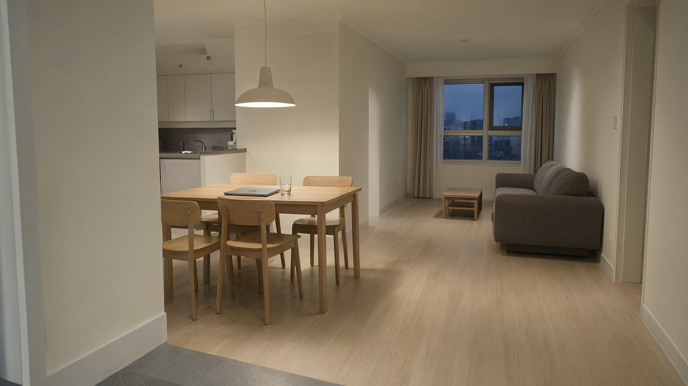
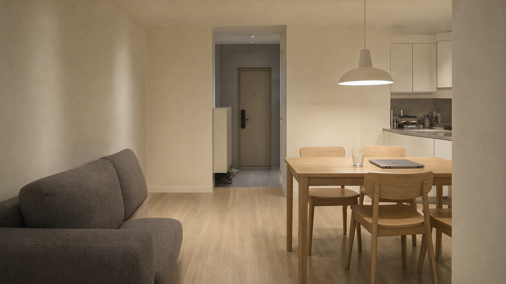
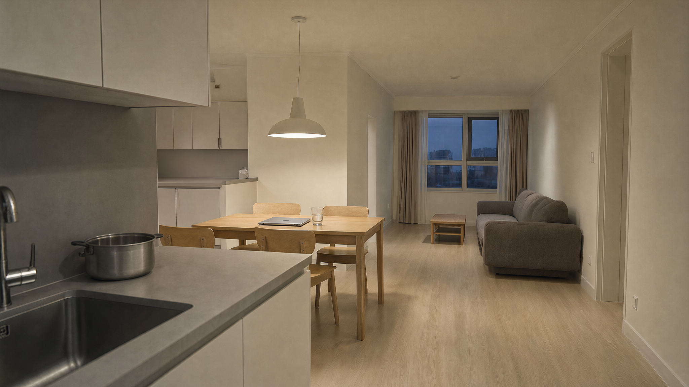
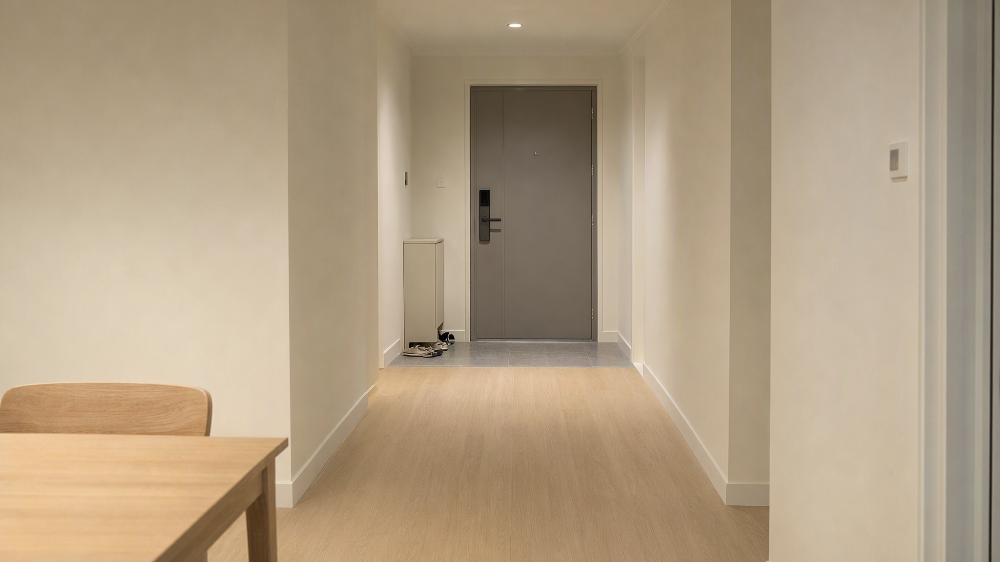
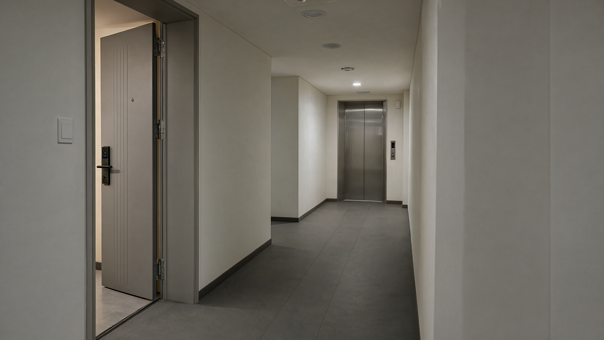
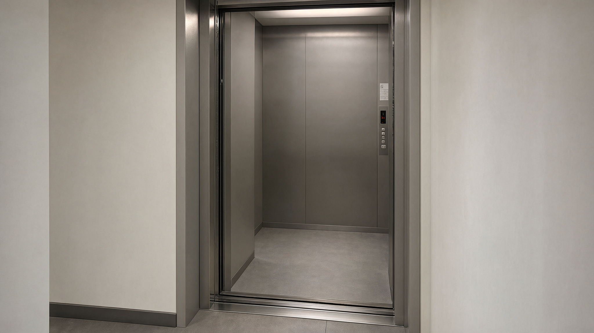
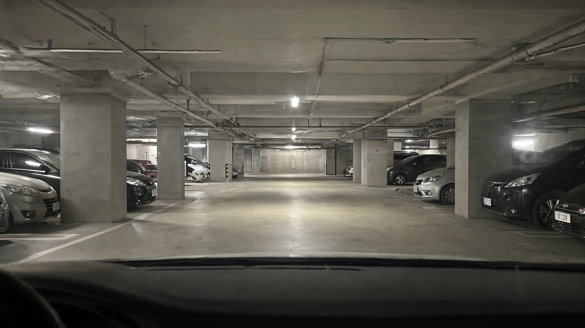

인물이 들어갈 빈 공간, 깊이가 읽히는 동선. Qwen-Image 2.1로 생성한 검토용 로케이션 시안이며, 사용자 확정 설정과 구분합니다.

01 · 집 전체 — 현관에서 거실
왼쪽 주방과 식탁, 오른쪽 거실, 안쪽 창. 가까운 진입부에서 먼 창까지 이어지는 깊이와 비어 있는 이동 경로.

02 · 집 역방향 — 거실에서 현관
실제 집 기준 이미지를 입력한 역방향 시안. 문을 신발 벗는 구역의 끝으로 옮긴 보완본이며, 현관 세부 뷰와 문 비율은 차이가 있습니다.

03 · 주방 — 돌봄과 감시의 시선
전경의 조리대, 중경의 식탁, 후경의 거실. 깊이와 식탁 시야를 보여주는 보완 시안. 중복 생성된 뒤쪽 싱크대를 제거한 결과이며, 가구 세부는 기준 뷰와 차이가 있습니다.

04 · 현관 — 출구와 통로
식탁에서 이어지는 길, 신발 벗는 타일 구역, 현관문. 도어록은 문짝 위에 두고 인물 둘의 행동 공간을 고려했습니다.

05 · 복도 — 집에서 엘리베이터로
열린 집 현관과 가까운 승강기. 문 앞 인물과 떨어진 복도 인물을 분리할 공간, 따뜻한 실내빛과 중성 공용 조명.

06 · 엘리베이터 — 마지막 선택
복도 기준 이미지를 실제 입력한 승강기 내부 시안. 문턱과 뒤쪽 벽이 만드는 깊이, 오른손으로 접근하는 패널.

07 · 지하주차장 — 11초의 증거
차량 앞유리 안쪽 시점. 전경의 대시보드, 차 앞의 빈 연기 공간, 뒤로 이어지는 기둥과 주차열.